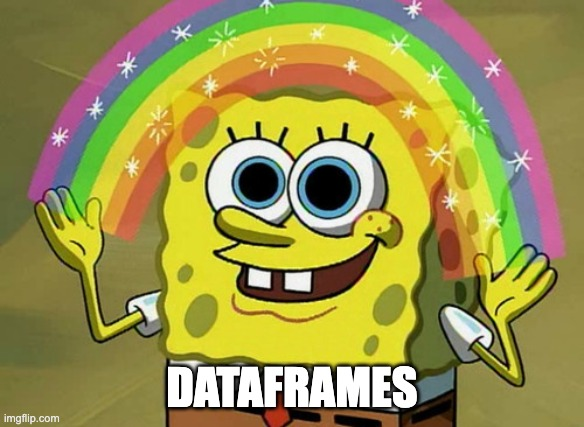
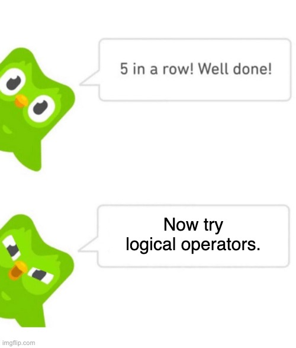

# This is an integer (int type)
print(3, "is a", type(3))3 is a <class 'int'>\[ \newcommand{\float}{\mathbb{F}} \newcommand{\real}{\mathbb{R}} \newcommand{\complex}{\mathbb{C}} \newcommand{\nat}{\mathbb{N}} \newcommand{\integer}{\mathbb{Z}} \newcommand{\bfa}{\mathbf{a}} \newcommand{\bfe}{\mathbf{e}} \newcommand{\bfh}{\mathbf{h}} \newcommand{\bfp}{\mathbf{p}} \newcommand{\bfq}{\mathbf{q}} \newcommand{\bfu}{\mathbf{u}} \newcommand{\bfv}{\mathbf{v}} \newcommand{\bfw}{\mathbf{w}} \newcommand{\bfx}{\mathbf{x}} \newcommand{\bfy}{\mathbf{y}} \newcommand{\bfz}{\mathbf{z}} \newcommand{\bfA}{\mathbf{A}} \newcommand{\bfW}{\mathbf{W}} \newcommand{\bfX}{\mathbf{X}} \newcommand{\bfzero}{\boldsymbol{0}} \newcommand{\bfmu}{\boldsymbol{\mu}} \newcommand{\TP}{\text{TP}} \newcommand{\TN}{\text{TN}} \newcommand{\FP}{\text{FP}} \newcommand{\FN}{\text{FN}} \newcommand{\rmn}[2]{\mathbb{R}^{#1 \times #2}} \newcommand{\dd}[2]{\frac{d #1}{d #2}} \newcommand{\pp}[2]{\frac{\partial #1}{\partial #2}} \newcommand{\norm}[1]{\left\lVert \mathstrut #1 \right\rVert} \newcommand{\abs}[1]{\left\lvert \mathstrut #1 \right\rvert} \newcommand{\twonorm}[1]{\norm{#1}_2} \newcommand{\onenorm}[1]{\norm{#1}_1} \newcommand{\infnorm}[1]{\norm{#1}_\infty} \newcommand{\innerprod}[2]{\langle #1,#2 \rangle} \newcommand{\pr}[1]{^{(#1)}} \newcommand{\diag}{\operatorname{diag}} \newcommand{\sign}{\operatorname{sign}} \newcommand{\dist}{\operatorname{dist}} \newcommand{\simil}{\operatorname{sim}} \newcommand{\ee}{\times 10^} \newcommand{\floor}[1]{\lfloor#1\rfloor} \newcommand{\argmin}{\operatorname{argmin}} \newcommand{\E}[1]{\operatorname{\mathbb{E}}\left[\mathstrut #1\right]} \newcommand{\Cov}{\operatorname{Cov}} \newcommand{\logit}{\operatorname{logit}} \]
First we have to discuss how to represent data, both abstractly and in Python.
Definition 1.1 A quantitative value is one that is numerical and supports meaningful comparison and arithmetic operations.
Quantitative data is further divided into continuous and discrete types. The difference is the same as between real numbers and integers.
Example 1.1 Some continuous quantitative data sources:
Examples of discrete quantitative data:
Sometimes there may be room for interpretation or context. For example, the retail price of a gallon of milk might be regarded as discrete data, since it technically represents a whole number of pennies. But in finance, transactions are regularly computed to much higher precision, so it might make more sense to interpret prices as continuous values. As a rule of thumb, if there are many possible values, or the values are the result of a measurement, the continuous interpretation is usually more appropriate.
Not all numerical values represent truly quantitative data. ZIP codes (postal codes) in the U.S. are 5-digit numbers, and while there is some logic to how they were assigned, there is no clearly meaningful interpretation of averaging them, for instance.
For both continuous and discrete quantities, it makes sense to order different values, compute averages of them, etc. (However, averages of discrete quantities are continuous.)
Mathematically, the real and integer number sets are infinite, but computers are finite machines. Integers are represented exactly within some range that is determined by how many binary bits are dedicated. The computational analog of real numbers are floating-point numbers, or more simply, floats. These are bounded in range as well as discretized. The details are complicated, but essentially, the floating-point numbers have about 16 significant decimal digits by default—which is virtually always far more precision than real data offers.
Example 1.2 if you enter an integer, it is interpreted as an int:
# This is an integer (int type)
print(3, "is a", type(3))3 is a <class 'int'>To get the floating-point version, you add a decimal point:
# This is a real number (float type)
print(3.0, "is a", type(3.0))3.0 is a <class 'float'>You can also use scientific notation:
print(6.02e23, "is Avogadro's number")
print(6.62607e-34, "is Planck's constant in Joule-seconds")6.02e+23 is Avogadro's number
6.62607e-34 is Planck's constant in Joule-secondsThere are also explicit converter functions. The conversion of an int to a float is generally exact:
# Convert int to float (generally no change to numerical value)
print( "float(3) creates",float(3) )float(3) creates 3.0But the conversion of int to float truncates the number, which can cause subtle bugs:
# Truncate float to int
print( "int(3.14) creates", int(3.14) )int(3.14) creates 3Be careful about comparing floating-point values.
Because operations on floats are not exact, results can be surprising:
print(0.2 - 0.1 == 0.1) # as expected
print(3.1 - 3.0 == 0.1) # uh-ohTrue
FalseThe Numpy function isclose is a safer way to compare floats:
import numpy as np
print( np.isclose(3.1 - 3.0, 0.1) )TrueThere are two additional quasi-numerical float values to be aware of as well.
For numerical work in Python, the NumPy package indispensible. We will use it often, and it is also loaded and used by most other scientifically oriented packages.
The value inf in NumPy stands for infinity.
Example 1.3 Infinity is greater than every number, and some arithmetic operations with infinity are well defined:
import numpy as np
print( "(np.inf + 5) is", np.inf + 5 )
print( "(np.inf + np.inf) is", np.inf + np.inf )
print( "(5 - np.inf) is", 5 - np.inf )(np.inf + 5) is inf
(np.inf + np.inf) is inf
(5 - np.inf) is -infHowever, in calculus you learned that some expressions with infinity are considered to be undefined without additional information (e.g., L’Hôpital’s Rule):
print( "np.inf / np.inf is", np.inf / np.inf )np.inf / np.inf is nanThe result nan above stands for Not a Number. It is the result of indeterminate arithmetic operations, like \(\infty/\infty\) and \(\infty - \infty\). It is also used sometimes as a placeholder for missing data.
By definition, every operation that involves a NaN value results in a NaN.
One notorious trap of using NaN is that nan==nan is not True!
print( "np.nan == np.nan is", np.nan == np.nan )np.nan == np.nan is FalseInstead, you should use np.isnan to check for NaN values:
print( "np.isnan(np.nan) is", np.isnan(np.nan) )np.isnan(np.nan) is TrueHandling times and dates can be tricky. Aside from headaches such as time zones and leap years, there are many different ways people and machines represent dates, and with varying amounts of precision. Python has its own inbuilt system for handling dates and times, but we will show the facilities provided by the NumPy package, which is more comprehensive.
There are two basic types:
Definition 1.2 A datetime is a representation of an instant in time. A time delta is a representation of a duration; i.e., a difference between two datetimes.
Native Python uses a datetime type, while NumPy uses datetime64.
Example 1.4 You can use many natural date formats within strings:
import numpy as np
np.datetime64("2020-01-17") # YYYY-MM-DD
np.datetime64("1969-07-20T20:17") # YYYY-MM-DDThh:mmnumpy.datetime64('1969-07-20T20:17')# Current date and time, down to the second
np.datetime64("now")numpy.datetime64('2024-02-13T21:16:20')A time delta in NumPy indicates its units (i. e., its granularity).
np.datetime64("1969-07-20T20:17") - np.datetime64("today")numpy.timedelta64(-28699423,'m')Most interesting phenomena are characterized and influenced by more than one factor. Collections of values therefore play a central role in data science. The workhorse type for collections in base Python is the list. However, we’re going to need some more powerful metaphors and tools as well, beginning with vectors.
Definition 1.3 A vector is a collection of values called elements, all of the same type, indexed by consecutive integers.
In math, vector indexes usually begin with 1. In Python, they begin with 0.
A vector with \(n\) elements is often referred to as an \(n\)-vector, and we say that \(n\) is the length of the vector. In math we often use \(\real^n\) to denote the set of all \(n\)-vectors with real-valued elements.
Example 1.5 The usual way to work with vectors in Python is through NumPy:
import numpy as np
x = np.array( [1, 2, 3, 4, 5] )
xarray([1, 2, 3, 4, 5])A vector has a data type for its elements:
x.dtypedtype('int64')Any float values in the vector cause the data type of the entire vector to be float:
y = np.array( [1.0, 2, 3, 4, 5] )
y.dtypedtype('float64')Use len to determine the length of a vector:
len(x)5You can create a special type of vector called a range that has equally spaced elements:
np.arange(0, 5)array([0, 1, 2, 3, 4])np.arange(1, 3, 0.5)array([1. , 1.5, 2. , 2.5])The syntax here is (start,stop,step).
In base Python and in NumPy, the last element of a range is omitted. This is guaranteed to cause confusion if you are used to just about any other computer language.
There are functions for creating vectors of ones and zeros:
print(np.ones(5))
print(np.zeros(4))[1. 1. 1. 1. 1.]
[0. 0. 0. 0.]The elements of a vector can be accessed directly using square brackets notation.
Example 1.6 Use square brackets to refer to an element of a vector, remembering that the first element has index 0:
x[0]1x[4]5Negative values for the index are counted from the end. The last element of a vector always has index -1, and more-negative values move backward through the elements:
x[-1]5x[-3]3x[-len(x)]1Element references can also be on the left side of an assignment:
x[2] = -3
xarray([ 1, 2, -3, 4, 5])Note, however, that once the data type of a vector is set, it can’t be changed:
x[0] = 1.234
x # float was truncated to int, without warning!!!array([ 1, 2, -3, 4, 5])You can also use a list in square brackets to access multiple elements at once:
x[ [0, 2, 4] ]array([ 1, -3, 5])The result of a list reference is a new vector, not a number.
Note the difference here:
x[0]1x[ [0] ]array([1])You can also access multiple elements of a vector by using a list or range as the index. In the latter case, this is called slicing.
Example 1.7 The syntax of a slice is start:stop.
As with ranges in base Python, the last element of a slice range is omitted. This causes many headaches and bugs.
x[0:3]array([ 1, 2, -3])x[-3:-1]array([-3, 4])If you want to use a range that skips over elements, you can use a third argument in the form start:stop:step:
x[0:2:5]array([1])When the start of the range is omitted, it means “from the beginning”, and when stop is omitted, it means “through to the end.” Hence, [:k] means “first \(k\) elements” and [-k:] means “last \(k\) elements”:
x[:3]array([ 1, 2, -3])x[-3:]array([-3, 4, 5])And we also have this idiom:
x[::-1] # reverse the vectorarray([ 5, 4, -3, 2, 1])NumPy will happily allow you to reference invalid indexes. It will just return as much as is available without warning or error:
x[:10]array([ 1, 2, -3, 4, 5])
A vector is a special case of a more general construct.
Definition 1.4 An array is a collection of values called elements, all of the same type, indexed by one or more sets of consecutive integers. The number of indexes needed to specify a value is the dimension of the array.
A dimension is called an axis in NumPy and related packages.
The term matrix is often used simply to mean a 2D array. Technically, though, a matrix should have only numerical values, and matrices obey certain properties that make them important mathematical objects. These properties and their consequences are studied in linear algebra.
For us, arrays will mostly be the results of importing or working on data. But it’s occasionally useful to know how to build them from scratch.
Example 1.8 One way to construct an array is by a list comprehension:
A = np.array([ [j-i for j in range(6)] for i in range(4) ])
Aarray([[ 0, 1, 2, 3, 4, 5],
[-1, 0, 1, 2, 3, 4],
[-2, -1, 0, 1, 2, 3],
[-3, -2, -1, 0, 1, 2]])The shape of an array is what we would often call the size:
A.shape(4, 6)There is no difference between a vector and a 1D array:
x.shape(5,)There is also no difference between a 2D array and a vector of vectors giving the rows of the array.
R = np.array( [ [1, 2, 3], [4, 5, 6] ])
Rarray([[1, 2, 3],
[4, 5, 6]])Here are some other common ways to construct arrays.
np.ones(5)array([1., 1., 1., 1., 1.])np.zeros( (3, 6) )array([[0., 0., 0., 0., 0., 0.],
[0., 0., 0., 0., 0., 0.],
[0., 0., 0., 0., 0., 0.]])np.repeat(np.pi, 3)array([3.14159265, 3.14159265, 3.14159265])You can also stack arrays vertically or horizontally to create new arrays.
np.hstack( ( np.ones((2, 2)), np.zeros((2, 3)) ) )array([[1., 1., 0., 0., 0.],
[1., 1., 0., 0., 0.]])np.vstack( (range(5), range(5, 0, -1)) )array([[0, 1, 2, 3, 4],
[5, 4, 3, 2, 1]])One way to think about a 2D array is a vector of vector rows of the same length. That idea is reflected in NumPy syntax.
Example 1.9 We can use successive brackets to refer to an element, row then column:
R[1][2] # second row, third column6It’s equivalent, and typically more convenient, to use a single bracket set with indexes separated by commas:
R[1, 2] # second row, third column6You can use slicing ranges in each dimension individually.
R[:1, -2:] # first row, last two columnsarray([[2, 3]])The result above is another 2D array. Note how this result is subtly different:
R[0, -2:]array([2, 3])Because we accessed an individual row, not a slice, the result is one dimension lower—a vector. Finally, a : in one slice position means to keep everything in that dimension.
A[:, :2] # all rows, first 2 columnsarray([[ 0, 1],
[-1, 0],
[-2, -1],
[-3, -2]])A common task is to reduce an array along one dimension, called an axis in numpy, resulting in an array of one less dimension.
Example 1.10 The first dimension of an array is axis number 0, the second is axis number 1, etc.
Aarray([[ 0, 1, 2, 3, 4, 5],
[-1, 0, 1, 2, 3, 4],
[-2, -1, 0, 1, 2, 3],
[-3, -2, -1, 0, 1, 2]])np.sum(A, axis=0) # sum along the rowsarray([-6, -2, 2, 6, 10, 14])Even when we sum along the column dimension, axis=1, the result is a vector that we would interpret as a row, not a column.
np.sum(A, axis=1) # sum along the columnsarray([15, 9, 3, -3])If you don’t specify an axis, the reduction occurs over all dimensions at once, resulting in a single number.
np.sum(A)24You can also do reductions with np.max, np.min, np.mean, etc.

A qualitative value is one that is not quantitative. There are numerous types, but we will consider only a few of them here. Ultimately, we need to be able to represent qualitative data in a quantitative way for use in algorithms.
Definition 1.5 Categorical data has values drawn from a finite set \(S\) of categories. If the members of \(S\) support meaningful ordering comparisons, then the data is ordinal; otherwise, it is nominal.
Example 1.11 Examples of ordinal categorical data:
Examples of nominal categorical data:
There are nuanced cases. For instance, letter grades are themselves ordinal categorical data. However, schools convert them to discrete quantitative data and then compute a continuous quantitative GPA.
One way to quantify ordinal categorical data is to assign integer values to the categories in a manner that preserves ordering. This approach can be suspect, though, when it comes to operations such as averaging or computing a distance between values.
Another means of quantifying categorical data is called dummy variables in classical statistics and one-hot encoding in much of machine learning. Suppose a variable \(x\) has values in a category set that has \(m\) members, i. e., \(S = \{c_1,\ldots,c_m\}\). There are two ways to replace the values with dummy variables.
\[ x_i = \begin{cases} 1, & v = c_i, \\ 0, & v \neq c_i. \end{cases} \]
Example 1.12 Suppose that the stooge variable can take the values Moe, Larry, Curly, or Shemp, and we have the dataset
[Curly, Moe, Curly, Shemp]If we use 4 dummy variables, the data would be replaced by the array
[ [0, 0, 1, 0], [1, 0, 0, 0], [0, 0, 1, 0], [0, 0, 0, 1] ]If we use only 3 dummy variables, we would get
[ [0, 0, 1], [1, 0, 0], [0, 0, 1], [0, 0, 0] ]Text is a ubiquitous data source. One way to quantify text is to use a dictionary of interesting keywords \(w_1,\ldots,w_n\). Given a collection of documents \(d_1,\ldots,d_m\), we can define an \(m\times n\) document–term matrix \(T\) by letting \(T_{ij}\) be the number of times term \(j\) appears in document \(i\).
The most straightforward way to represent an image is as a 3D array of values representing intensities representing of red, green and blue in each pixel. Sometimes it might be preferable to represent the image by a vector of statistics about these values, or by presence or absence of detected objects, etc.
The most popular Python package for manipulating and analyzing data is pandas. We will use the paradigm it presents, which is fairly well understood throughout data science.
Definition 1.6 A series is a vector that is indexed by a finite ordered set. A data frame is a collection of series that all share the same index set.
We can conceptualize a series as a vector plus an index list, and a data frame as a 2D array with index sets for the rows and the columns. In that sense, they are simply syntactic sugar. However, since people are much better at remembering the meaning of words than arbitrarily assigned integers, data frames serve to prevent errors and misunderstandings.
Example 1.13 Some data that can be viewed as series:
Example 1.14 Here is a pandas series for the wavelengths of light corresponding to rainbow colors:
import pandas as pd
wavelength = pd.Series(
[400, 470, 520, 580, 610, 710], # values
index=["violet", "blue", "green", "yellow", "orange", "red"],
name="wavelength"
)
wavelengthviolet 400
blue 470
green 520
yellow 580
orange 610
red 710
Name: wavelength, dtype: int64We can use an index value (one of the colors) to access a value in the series:
wavelength["blue"]470If we access multiple values, we get a series that is a subset of the original:
wavelength[ ["violet", "red"] ]violet 400
red 710
Name: wavelength, dtype: int64We can also use the iloc property to access the underlying vector by NumPy slicing:
wavelength.iloc[:4]violet 400
blue 470
green 520
yellow 580
Name: wavelength, dtype: int64Here is a series of NFL teams based on the same index:
team = pd.Series(
["Vikings", "Bills", "Eagles", "Chargers", "Bengals", "Cardinals"],
index = wavelength.index,
name="team"
)
team["green"]'Eagles'Now we can create a data frame using these two series as columns:
rainbow = pd.DataFrame( {"wavelength": wavelength, "team name": team} )
rainbow| wavelength | team name | |
|---|---|---|
| violet | 400 | Vikings |
| blue | 470 | Bills |
| green | 520 | Eagles |
| yellow | 580 | Chargers |
| orange | 610 | Bengals |
| red | 710 | Cardinals |
Curly braces { } are used to construct a dictionary in Python.
We can access a single column using simple bracket notation:
rainbow["team name"]violet Vikings
blue Bills
green Eagles
yellow Chargers
orange Bengals
red Cardinals
Name: team name, dtype: objectWe can add a column after the fact by using a bracket access on the left side of the assignment:
rainbow["flower"] = [
"Lobelia",
"Cornflower",
"Bells-of-Ireland",
"Daffodil",
"Butterfly weed",
"Rose"
]
rainbow| wavelength | team name | flower | |
|---|---|---|---|
| violet | 400 | Vikings | Lobelia |
| blue | 470 | Bills | Cornflower |
| green | 520 | Eagles | Bells-of-Ireland |
| yellow | 580 | Chargers | Daffodil |
| orange | 610 | Bengals | Butterfly weed |
| red | 710 | Cardinals | Rose |
We can access a row by using brackets with the loc property of the frame, getting a series indexed by the column names of the frame:
rainbow.loc["orange"]wavelength 610
team name Bengals
flower Butterfly weed
Name: orange, dtype: objectWe are also free to strip away the index and get an ordinary array:
rainbow.loc["red"].to_numpy()array([710, 'Cardinals', 'Rose'], dtype=object)
Example 1.15 Here are some more direct ways to construct a data frame in pandas.
In this case, we give a list of rows, plus (optionally) the index and the names of the columns:
pd.DataFrame(
[ ("white", 4), ("brown", 8), ("pink", 7) ],
columns=["Color", "Rating"],
index=["vanilla", "chocolate", "strawberry"]
)| Color | Rating | |
|---|---|---|
| vanilla | white | 4 |
| chocolate | brown | 8 |
| strawberry | pink | 7 |
We can also specify data as columns by using a dictionary:
pd.DataFrame(
{ "Color": ["white", "brown", "pink"], "Rating": [4, 8, 7] },
index=["vanilla", "chocolate", "strawberry"]
)| Color | Rating | |
|---|---|---|
| vanilla | white | 4 |
| chocolate | brown | 8 |
| strawberry | pink | 7 |
| Description | Syntax | Result |
|---|---|---|
| First or last entries | s.head(), s.tail() |
Series |
| Length | len(s) |
integer |
| Number of entries | s.shape |
tuple |
| All of the values | s.values |
array |
| Convert to list | list(s) |
list |
| Index | s.index |
Index |
| Unique values | s.unique() |
array |
| Appearance counts for values | s.value_counts() |
Series |
| Extreme values | s.min(), s.max() |
number |
| Sum | s.sum() |
number |
| Comparison | s > 1, s=="foo" |
boolean Series |
| Locate missing | s.isna() |
boolean Series |
| Arithmetic | s + 1, s * t |
Series |
| Delete one or more rows | s.drop(0) |
Series |
Pandas offers many methods for manipulating series and data frames. Table 1.1 shows common operations that can be applied to a series. Since a column of a data frame is a series, these operations can be applied in that context, too. There is an exhaustive list in the pandas documentation.
As always in Python, you need to pay attention to the difference between applying a function, like foo(bar), accessing a property, like foo.bar, and calling an object method, foo.bar(). Extra or missing parentheses groups can cause errors.
| Description | Syntax | Result |
|---|---|---|
| First or last rows | df.head(), df.tail() |
DataFrame |
| Number of rows | len(df) |
integer |
| Number of rows and columns | df.shape |
tuple |
| All of the values | df.values |
array |
| Row index | df.index |
Index |
| Column names | list(df) |
list |
| Column names | df.columns |
Index |
| Access by column name(s) | df["name"] |
Series or DataFrame |
| Access by name | df.loc[rows, "name"] |
(varies) |
| Access by position | df.iloc[i, j] |
(varies) |
| Sum | df.sum() |
Series |
| Comparison | s > 1, s=="foo" |
boolean DataFrame |
| Delete a column | df.drop(name, axis=1) |
DataFrame |
| Apply columnwise | df.apply(myfun) |
(varies) |
Table 1.2 shows additional operations that can be applied to an entire data frame (or to any subset). It takes a lot of space to demonstrate all the ways in which these can be used, as is done in the pandas user guide, so they are just collected here for future reference. There is also an exhaustive list of them in the pandas documentation.
Pandas has many facilities for dealing with categorical variables.
Example 1.16 Here is a dataset about features and prices of diamonds:
import seaborn as sns
diamonds = sns.load_dataset("diamonds")
diamonds.head()| carat | cut | color | clarity | depth | table | price | x | y | z | |
|---|---|---|---|---|---|---|---|---|---|---|
| 0 | 0.23 | Ideal | E | SI2 | 61.5 | 55.0 | 326 | 3.95 | 3.98 | 2.43 |
| 1 | 0.21 | Premium | E | SI1 | 59.8 | 61.0 | 326 | 3.89 | 3.84 | 2.31 |
| 2 | 0.23 | Good | E | VS1 | 56.9 | 65.0 | 327 | 4.05 | 4.07 | 2.31 |
| 3 | 0.29 | Premium | I | VS2 | 62.4 | 58.0 | 334 | 4.20 | 4.23 | 2.63 |
| 4 | 0.31 | Good | J | SI2 | 63.3 | 58.0 | 335 | 4.34 | 4.35 | 2.75 |
As you can see above, some of the features (cut, color, clarity) have string designations. We could convert clarity, for example, to a categorical variable like so:
pd.Categorical(diamonds["clarity"])['SI2', 'SI1', 'VS1', 'VS2', 'SI2', ..., 'SI1', 'SI1', 'SI1', 'SI2', 'SI2']
Length: 53940
Categories (8, object): ['IF', 'VVS1', 'VVS2', 'VS1', 'VS2', 'SI1', 'SI2', 'I1']However, these values actually have a specific ordering in this context, and that is lost in the nominal variable above. We can fix that by specifying the ordering when we create the categorical variable:
clarities = ["I1", "SI2", "SI1", "VS2", "VS1", "VVS2", "VVS1", "IF"]
pd.Categorical(diamonds["clarity"], categories=clarities, ordered=True)['SI2', 'SI1', 'VS1', 'VS2', 'SI2', ..., 'SI1', 'SI1', 'SI1', 'SI2', 'SI2']
Length: 53940
Categories (8, object): ['I1' < 'SI2' < 'SI1' < 'VS2' < 'VS1' < 'VVS2' < 'VVS1' < 'IF']You often want to simply replace the ordered categories with integers:
cl_num = pd.Categorical(diamonds["clarity"], categories=clarities, ordered=True)
diamonds["clarity"] = cl_num.codes
diamonds.head()| carat | cut | color | clarity | depth | table | price | x | y | z | |
|---|---|---|---|---|---|---|---|---|---|---|
| 0 | 0.23 | Ideal | E | 1 | 61.5 | 55.0 | 326 | 3.95 | 3.98 | 2.43 |
| 1 | 0.21 | Premium | E | 2 | 59.8 | 61.0 | 326 | 3.89 | 3.84 | 2.31 |
| 2 | 0.23 | Good | E | 4 | 56.9 | 65.0 | 327 | 4.05 | 4.07 | 2.31 |
| 3 | 0.29 | Premium | I | 3 | 62.4 | 58.0 | 334 | 4.20 | 4.23 | 2.63 |
| 4 | 0.31 | Good | J | 1 | 63.3 | 58.0 | 335 | 4.34 | 4.35 | 2.75 |
In such cases, it’s more direct to use string replacement:
cuts = ["Fair", "Good", "Very Good", "Premium", "Ideal"]
diamonds["cut"] = diamonds["cut"].replace(
cuts, # to be replaced
range(1, 6), # replacements
)
diamonds.head()| carat | cut | color | clarity | depth | table | price | x | y | z | |
|---|---|---|---|---|---|---|---|---|---|---|
| 0 | 0.23 | 5 | E | 1 | 61.5 | 55.0 | 326 | 3.95 | 3.98 | 2.43 |
| 1 | 0.21 | 4 | E | 2 | 59.8 | 61.0 | 326 | 3.89 | 3.84 | 2.31 |
| 2 | 0.23 | 2 | E | 4 | 56.9 | 65.0 | 327 | 4.05 | 4.07 | 2.31 |
| 3 | 0.29 | 4 | I | 3 | 62.4 | 58.0 | 334 | 4.20 | 4.23 | 2.63 |
| 4 | 0.31 | 2 | J | 1 | 63.3 | 58.0 | 335 | 4.34 | 4.35 | 2.75 |
A common need is to convert a categorical variable to dummy variables. Pandas makes that a one-liner.
Example 1.17 Here is a vector of chess pieces at the start of a game:
pieces = pd.Series( [
"pawn", "pawn", "pawn", "pawn", "pawn", "pawn", "pawn", "pawn",
"knight", "bishop", "rook", "knight", "bishop", "rook",
"queen", "king"
] )We can use pandas to convert this variable to dummy variables:
pd.get_dummies(pieces).head(9)| bishop | king | knight | pawn | queen | rook | |
|---|---|---|---|---|---|---|
| 0 | 0 | 0 | 0 | 1 | 0 | 0 |
| 1 | 0 | 0 | 0 | 1 | 0 | 0 |
| 2 | 0 | 0 | 0 | 1 | 0 | 0 |
| 3 | 0 | 0 | 0 | 1 | 0 | 0 |
| 4 | 0 | 0 | 0 | 1 | 0 | 0 |
| 5 | 0 | 0 | 0 | 1 | 0 | 0 |
| 6 | 0 | 0 | 0 | 1 | 0 | 0 |
| 7 | 0 | 0 | 0 | 1 | 0 | 0 |
| 8 | 0 | 0 | 1 | 0 | 0 | 0 |
We can also use the encoding variant in which one of the categories is left out:
pd.get_dummies(pieces, drop_first=True).head(6)| king | knight | pawn | queen | rook | |
|---|---|---|---|---|---|
| 0 | 0 | 0 | 1 | 0 | 0 |
| 1 | 0 | 0 | 1 | 0 | 0 |
| 2 | 0 | 0 | 1 | 0 | 0 |
| 3 | 0 | 0 | 1 | 0 | 0 |
| 4 | 0 | 0 | 1 | 0 | 0 |
| 5 | 0 | 0 | 1 | 0 | 0 |
Datasets can be presented in many forms. In this course, we assume that they are given as spreadsheets or in comma-separated value (CSV) files. These files can be read by pandas locally or over the web.
Example 1.18 The pandas function we use to load a dataset is read_csv. Here we use it to read a file that is available over the web:
ads = pd.read_csv("https://raw.githubusercontent.com/tobydriscoll/ds1book/master/advertising.csv")
ads.head(6) # show the first 6 rows| TV | Radio | Newspaper | Sales | |
|---|---|---|---|---|
| 0 | 230.1 | 37.8 | 69.2 | 22.1 |
| 1 | 44.5 | 39.3 | 45.1 | 10.4 |
| 2 | 17.2 | 45.9 | 69.3 | 12.0 |
| 3 | 151.5 | 41.3 | 58.5 | 16.5 |
| 4 | 180.8 | 10.8 | 58.4 | 17.9 |
| 5 | 8.7 | 48.9 | 75.0 | 7.2 |
Note above that we used head(6) to see just the first 6 rows.
A data frame has a few properties that describe its contents:
ads.shape # number of rows, number of columns(200, 4)ads.columns # names of the columnsIndex(['TV', 'Radio', 'Newspaper', 'Sales'], dtype='object')ads.dtypes # data types of the columnsTV float64
Radio float64
Newspaper float64
Sales float64
dtype: objectWhile it’s possible to import datasets directly from the web, links change and disappear frequently. If storing the dataset locally is not a problem, you may want to download your own copy before working on it.
It’s also possible to import data from most other general-purpose formats you might encounter, such as Excel spreadsheets (though possibly requiring one-time installation of additional libraries). There are many functions starting with pd.read_ showing the formats pandas understands.
In a data frame, we access columns by giving a string name, or a list of names, in square brackets. We can access a row by the loc property with an index value, or iloc with an absolute row number starting from zero.
Example 1.19 Here’s a local file that contains daily weather summaries from Newark, Delaware:
weather = pd.read_csv("_datasets/ghcn_newark.csv")
weather.head()| STATION | DATE | LATITUDE | LONGITUDE | ELEVATION | NAME | PRCP | PRCP_ATTRIBUTES | SNOW | SNOW_ATTRIBUTES | ... | WT08 | WT08_ATTRIBUTES | WT11 | WT11_ATTRIBUTES | WT14 | WT14_ATTRIBUTES | WT16 | WT16_ATTRIBUTES | WT18 | WT18_ATTRIBUTES | |
|---|---|---|---|---|---|---|---|---|---|---|---|---|---|---|---|---|---|---|---|---|---|
| 0 | USC00076410 | 1894-04-01 | 39.6682 | -75.74569 | 32.3 | NEWARK AG FARM, DE US | 0.0 | P,,6, | NaN | NaN | ... | NaN | NaN | NaN | NaN | NaN | NaN | NaN | NaN | NaN | NaN |
| 1 | USC00076410 | 1894-04-02 | 39.6682 | -75.74569 | 32.3 | NEWARK AG FARM, DE US | 0.0 | P,,6, | NaN | NaN | ... | NaN | NaN | NaN | NaN | NaN | NaN | NaN | NaN | NaN | NaN |
| 2 | USC00076410 | 1894-04-03 | 39.6682 | -75.74569 | 32.3 | NEWARK AG FARM, DE US | 0.0 | P,,6, | NaN | NaN | ... | NaN | NaN | NaN | NaN | NaN | NaN | NaN | NaN | NaN | NaN |
| 3 | USC00076410 | 1894-04-04 | 39.6682 | -75.74569 | 32.3 | NEWARK AG FARM, DE US | 165.0 | ,,6, | NaN | NaN | ... | NaN | NaN | NaN | NaN | NaN | NaN | NaN | NaN | NaN | NaN |
| 4 | USC00076410 | 1894-04-05 | 39.6682 | -75.74569 | 32.3 | NEWARK AG FARM, DE US | 0.0 | P,,6, | NaN | NaN | ... | NaN | NaN | NaN | NaN | NaN | NaN | NaN | NaN | NaN | NaN |
5 rows × 56 columns
There are lots of columns here. We will work with a small subset of them:
columns = ["DATE", "PRCP", "SNOW", "TMAX", "TMIN"]
weather = weather[columns]
weather.head()| DATE | PRCP | SNOW | TMAX | TMIN | |
|---|---|---|---|---|---|
| 0 | 1894-04-01 | 0.0 | NaN | 189.0 | 111.0 |
| 1 | 1894-04-02 | 0.0 | NaN | 133.0 | 22.0 |
| 2 | 1894-04-03 | 0.0 | NaN | 89.0 | -61.0 |
| 3 | 1894-04-04 | 165.0 | NaN | 117.0 | 17.0 |
| 4 | 1894-04-05 | 0.0 | NaN | 156.0 | 56.0 |
The first row has absolute position zero:
weather.iloc[0]DATE 1894-04-01
PRCP 0.0
SNOW NaN
TMAX 189.0
TMIN 111.0
Name: 0, dtype: objectThe result above is a series, with the column names of the original data frame serving as the index. The following result is subtly different:
weather.iloc[:1]| DATE | PRCP | SNOW | TMAX | TMIN | |
|---|---|---|---|---|---|
| 0 | 1894-04-01 | 0.0 | NaN | 189.0 | 111.0 |
The slicing syntax [:1] means “the first 1 rows”. The result is a one-row data frame—not a series. To access the last 4 rows, we can use a negative index:
weather.iloc[-4:]| DATE | PRCP | SNOW | TMAX | TMIN | |
|---|---|---|---|---|---|
| 29513 | 2022-12-17 | 0.0 | NaN | 72.0 | 11.0 |
| 29514 | 2022-12-18 | 0.0 | NaN | 39.0 | -22.0 |
| 29515 | 2023-01-06 | 0.0 | NaN | 89.0 | 33.0 |
| 29516 | 2023-01-07 | 0.0 | NaN | 72.0 | 17.0 |
In Example 1.19, we did not specify an index for the data frame, so the row numbers were the index. If we do give the data frame an index, we can use loc to access rows by the index value.
Example 1.20 A natural candidate for an index in the weather data is the DATE column. This can be specified when the file is read, but here we do it after the fact:
dated_weather = weather.set_index("DATE")
dated_weather.head()| PRCP | SNOW | TMAX | TMIN | |
|---|---|---|---|---|
| DATE | ||||
| 1894-04-01 | 0.0 | NaN | 189.0 | 111.0 |
| 1894-04-02 | 0.0 | NaN | 133.0 | 22.0 |
| 1894-04-03 | 0.0 | NaN | 89.0 | -61.0 |
| 1894-04-04 | 165.0 | NaN | 117.0 | 17.0 |
| 1894-04-05 | 0.0 | NaN | 156.0 | 56.0 |
Notice above that the leftmost column of dated_weather is the index, which still has the column name DATE. We can access a row by giving a date string to loc:
dated_weather.loc["1979-03-28"]PRCP 0.0
SNOW 0.0
TMAX 111.0
TMIN -33.0
Name: 1979-03-28, dtype: float64We can extract a row and column simultaneously by giving both to loc:
dated_weather.loc["1979-03-28", "TMAX"]111.0When the index is a date, as is the case here, we can even use a range of dates:
dated_weather.loc["1979-03-01":"1979-03-06"]| PRCP | SNOW | TMAX | TMIN | |
|---|---|---|---|---|
| DATE | ||||
| 1979-03-01 | 0.0 | 0.0 | 122.0 | -22.0 |
| 1979-03-02 | 3.0 | 0.0 | 128.0 | 33.0 |
| 1979-03-03 | 0.0 | 0.0 | 117.0 | 22.0 |
| 1979-03-04 | 0.0 | 0.0 | NaN | NaN |
| 1979-03-05 | 61.0 | 0.0 | NaN | NaN |
| 1979-03-06 | 173.0 | 0.0 | 128.0 | 83.0 |

Frequently we want to select rows from a data frame based on criteria applied to the data itself. We can use relational operators such as >, <, ==, etc. to select rows based on the values in a column.
Example 1.21 Here is how we can select all the rows in which the value of PRCP is greater than 1200:
weather.loc[weather["PRCP"] > 1200]| DATE | PRCP | SNOW | TMAX | TMIN | |
|---|---|---|---|---|---|
| 9396 | 1952-07-09 | 1377.0 | 0.0 | 261.0 | 200.0 |
| 12382 | 1960-09-12 | 1331.0 | 0.0 | 222.0 | 167.0 |
| 16352 | 1971-08-27 | 1207.0 | 0.0 | 256.0 | 194.0 |
| 26543 | 1999-09-16 | 2202.0 | 0.0 | 206.0 | 156.0 |
| 27938 | 2004-07-12 | 1580.0 | 0.0 | 244.0 | 189.0 |
| 27986 | 2004-09-29 | 1450.0 | 0.0 | 244.0 | 178.0 |
There are two steps above. The expression inside the square brackets produces a series of Boolean values:
is_prcp = (weather["PRCP"] > 1200)
is_prcp.head()0 False
1 False
2 False
3 False
4 False
Name: PRCP, dtype: boolThis series can be used to select rows with loc. Actually, it works without loc as well, because pandas knows it is a row selector:
print("There are",is_prcp.sum(),"rows with PRCP > 1200.")
weather[is_prcp]There are 6 rows with PRCP > 1200.| DATE | PRCP | SNOW | TMAX | TMIN | |
|---|---|---|---|---|---|
| 9396 | 1952-07-09 | 1377.0 | 0.0 | 261.0 | 200.0 |
| 12382 | 1960-09-12 | 1331.0 | 0.0 | 222.0 | 167.0 |
| 16352 | 1971-08-27 | 1207.0 | 0.0 | 256.0 | 194.0 |
| 26543 | 1999-09-16 | 2202.0 | 0.0 | 206.0 | 156.0 |
| 27938 | 2004-07-12 | 1580.0 | 0.0 | 244.0 | 189.0 |
| 27986 | 2004-09-29 | 1450.0 | 0.0 | 244.0 | 178.0 |
We can use logical operators & (AND), | (OR), and ~ (NOT) on these Boolean series in order to combine criteria:
weather[(weather["TMAX"] < 0) & (weather["SNOW"] > 0)]| DATE | PRCP | SNOW | TMAX | TMIN | |
|---|---|---|---|---|---|
| 272 | 1895-01-29 | 102.0 | 102.0 | -22.0 | -94.0 |
| 282 | 1895-02-08 | 127.0 | 178.0 | -139.0 | -189.0 |
| 692 | 1896-03-24 | 33.0 | 51.0 | -22.0 | -100.0 |
| 943 | 1896-11-30 | 107.0 | 76.0 | -6.0 | -33.0 |
| 966 | 1896-12-23 | 48.0 | 51.0 | -6.0 | -89.0 |
| ... | ... | ... | ... | ... | ... |
| 25224 | 1996-01-08 | 3.0 | 25.0 | -28.0 | -156.0 |
| 25249 | 1996-02-02 | 20.0 | 25.0 | -22.0 | -56.0 |
| 25250 | 1996-02-03 | 155.0 | 147.0 | -33.0 | -111.0 |
| 25594 | 1997-01-12 | 13.0 | 13.0 | -33.0 | -100.0 |
| 25623 | 1997-03-10 | 178.0 | 8.0 | -17.0 | 167.0 |
131 rows × 5 columns
The pandas user guide has a handy section on selections.
For practice with pandas fundamentals, try the Kaggle course.
Raw data often needs to be manipulated into a useable format before algorithms can be applied. Preprocessing data so that it is suitable for machine analysis is known as data wrangling or data munging.
I’m impossible to prepare for every future situation when it comes to preprocessing data. You might find the replace() method or str. methods handy to tidy up strings, or to replace strings with numerical values. You can parse a string that represents one or more numbers using the to_numeric() or extractall There are built-in ways to parse and manipulate dates and times.
To demonstrate algorithms in later sections, we will be using a dataset describing loans made on the crowdfunding site LendingClub.
Example 1.22 First, we load the raw data from a CSV (comma separated values) file.
import pandas as pd
loans = pd.read_csv("_datasets/loans.csv")
loans.head()| id | member_id | loan_amnt | funded_amnt | funded_amnt_inv | term | int_rate | installment | grade | sub_grade | ... | num_tl_90g_dpd_24m | num_tl_op_past_12m | pct_tl_nvr_dlq | percent_bc_gt_75 | pub_rec_bankruptcies | tax_liens | tot_hi_cred_lim | total_bal_ex_mort | total_bc_limit | total_il_high_credit_limit | |
|---|---|---|---|---|---|---|---|---|---|---|---|---|---|---|---|---|---|---|---|---|---|
| 0 | 1077501 | 1296599 | 5000 | 5000 | 4975.0 | 36 months | 10.65% | 162.87 | B | B2 | ... | NaN | NaN | NaN | NaN | 0.0 | 0.0 | NaN | NaN | NaN | NaN |
| 1 | 1077430 | 1314167 | 2500 | 2500 | 2500.0 | 60 months | 15.27% | 59.83 | C | C4 | ... | NaN | NaN | NaN | NaN | 0.0 | 0.0 | NaN | NaN | NaN | NaN |
| 2 | 1077175 | 1313524 | 2400 | 2400 | 2400.0 | 36 months | 15.96% | 84.33 | C | C5 | ... | NaN | NaN | NaN | NaN | 0.0 | 0.0 | NaN | NaN | NaN | NaN |
| 3 | 1076863 | 1277178 | 10000 | 10000 | 10000.0 | 36 months | 13.49% | 339.31 | C | C1 | ... | NaN | NaN | NaN | NaN | 0.0 | 0.0 | NaN | NaN | NaN | NaN |
| 4 | 1075358 | 1311748 | 3000 | 3000 | 3000.0 | 60 months | 12.69% | 67.79 | B | B5 | ... | NaN | NaN | NaN | NaN | 0.0 | 0.0 | NaN | NaN | NaN | NaN |
5 rows × 111 columns
The int_rate column, which gives the interest rate on the loan, has been interpreted as strings due to the percent sign. We’d like to strip out those percent signs and convert the rest to numeric types. We can use the str property of the column to access string methods:
loans["int_rate"].str.strip('%')0 10.65
1 15.27
2 15.96
3 13.49
4 12.69
...
39712 8.07
39713 10.28
39714 8.07
39715 7.43
39716 13.75
Name: int_rate, Length: 39717, dtype: objectThen, we can convert the result to numeric:
loans["int_rate"] = pd.to_numeric( loans["int_rate"].str.strip('%') )
loans.head()| id | member_id | loan_amnt | funded_amnt | funded_amnt_inv | term | int_rate | installment | grade | sub_grade | ... | num_tl_90g_dpd_24m | num_tl_op_past_12m | pct_tl_nvr_dlq | percent_bc_gt_75 | pub_rec_bankruptcies | tax_liens | tot_hi_cred_lim | total_bal_ex_mort | total_bc_limit | total_il_high_credit_limit | |
|---|---|---|---|---|---|---|---|---|---|---|---|---|---|---|---|---|---|---|---|---|---|
| 0 | 1077501 | 1296599 | 5000 | 5000 | 4975.0 | 36 months | 10.65 | 162.87 | B | B2 | ... | NaN | NaN | NaN | NaN | 0.0 | 0.0 | NaN | NaN | NaN | NaN |
| 1 | 1077430 | 1314167 | 2500 | 2500 | 2500.0 | 60 months | 15.27 | 59.83 | C | C4 | ... | NaN | NaN | NaN | NaN | 0.0 | 0.0 | NaN | NaN | NaN | NaN |
| 2 | 1077175 | 1313524 | 2400 | 2400 | 2400.0 | 36 months | 15.96 | 84.33 | C | C5 | ... | NaN | NaN | NaN | NaN | 0.0 | 0.0 | NaN | NaN | NaN | NaN |
| 3 | 1076863 | 1277178 | 10000 | 10000 | 10000.0 | 36 months | 13.49 | 339.31 | C | C1 | ... | NaN | NaN | NaN | NaN | 0.0 | 0.0 | NaN | NaN | NaN | NaN |
| 4 | 1075358 | 1311748 | 3000 | 3000 | 3000.0 | 60 months | 12.69 | 67.79 | B | B5 | ... | NaN | NaN | NaN | NaN | 0.0 | 0.0 | NaN | NaN | NaN | NaN |
5 rows × 111 columns
As you see above, we often end up with chains of methods separated by dots. Python works from the inside out, left to right, evaluating a sub-expression and then replacing it with the output for the next segment in the chain. We could write these as a sequence of separate lines having intermediate results assigned to variable names, but it’s considered better style to chain them.
The title column contains strings that haphazardly formatted:
loans["title"]0 Computer
1 bike
2 real estate business
3 personel
4 Personal
...
39712 Home Improvement
39713 Retiring credit card debt
39714 MBA Loan Consolidation
39715 JAL Loan
39716 Consolidation Loan
Name: title, Length: 39717, dtype: objectWe might improve matters by converting everything in that column to lowercase. We can use the str.lower() method for that:
loans["title"] = loans["title"].str.lower()
loans["title"]0 computer
1 bike
2 real estate business
3 personel
4 personal
...
39712 home improvement
39713 retiring credit card debt
39714 mba loan consolidation
39715 jal loan
39716 consolidation loan
Name: title, Length: 39717, dtype: objectLet’s add a column for the percentage of the loan request that was eventually funded. This will be a target for some of our learning methods.
loans["percent_funded"] = 100 * loans["funded_amnt"] / loans["loan_amnt"]In future chapters, we will only use a small subset of the numerical columns:
columns = [ "percent_funded", "loan_amnt", "int_rate", "installment", "annual_inc",
"dti", "delinq_2yrs", "delinq_amnt" ]
loans = loans[columns]Finally, we’ll output this cleaned data frame to its own CSV file. By default, saving will include the index, which in this case is a meaningless row number, so we suppress that with a keyword:
loans.to_csv("loan_clean.csv", index=False)In real data sets we often must cope with rows that have missing values. There is no universal way that such values are presented. A missing value may be indicated by a zero or nonsensical value, or with a string such as “n/a”, or just an empty spot. Within Python, it might be natural to represent missing values as None, but that is not a valid value for a NumPy array. It’s more flexible within pandas to use np.nan, for “not a number”.
The best practice for locating missing values in pandas is to use the isna() method. But you have to do something about them before you can apply algorithms. It’s simplest to remove all rows that contain missing values, which is the job of the pandas dropna() method. But if that leads to too much data loss, you can try imputation, which means replacing the missing values with a representative value, such as the mean or median of the non-missing values. In that case you should use the fillna() method.
Example 1.23 Here is a well-known data set about penguins:
import seaborn as sns
penguins = sns.load_dataset("penguins")
penguins.head()| species | island | bill_length_mm | bill_depth_mm | flipper_length_mm | body_mass_g | sex | |
|---|---|---|---|---|---|---|---|
| 0 | Adelie | Torgersen | 39.1 | 18.7 | 181.0 | 3750.0 | Male |
| 1 | Adelie | Torgersen | 39.5 | 17.4 | 186.0 | 3800.0 | Female |
| 2 | Adelie | Torgersen | 40.3 | 18.0 | 195.0 | 3250.0 | Female |
| 3 | Adelie | Torgersen | NaN | NaN | NaN | NaN | NaN |
| 4 | Adelie | Torgersen | 36.7 | 19.3 | 193.0 | 3450.0 | Female |
Note above that the fourth row of the frame is missing measurements. We can discover how many such rows there are using isna, which creates a Boolean series:
penguins.isna()| species | island | bill_length_mm | bill_depth_mm | flipper_length_mm | body_mass_g | sex | |
|---|---|---|---|---|---|---|---|
| 0 | False | False | False | False | False | False | False |
| 1 | False | False | False | False | False | False | False |
| 2 | False | False | False | False | False | False | False |
| 3 | False | False | True | True | True | True | True |
| 4 | False | False | False | False | False | False | False |
| ... | ... | ... | ... | ... | ... | ... | ... |
| 339 | False | False | True | True | True | True | True |
| 340 | False | False | False | False | False | False | False |
| 341 | False | False | False | False | False | False | False |
| 342 | False | False | False | False | False | False | False |
| 343 | False | False | False | False | False | False | False |
344 rows × 7 columns
penguins.isna().sum()species 0
island 0
bill_length_mm 2
bill_depth_mm 2
flipper_length_mm 2
body_mass_g 2
sex 11
dtype: int64If all you want to do is drop the rows with missing values, you can use dropna:
print("Original has", len(penguins), "rows.")
print("After removals, there are", len(penguins.dropna()), "rows.")Original has 344 rows.
After removals, there are 333 rows.If you want to impute missing values, you can use fillna. Here, for example, we replace missing values in any column with the mean of the column:
new_penguins = penguins.fillna(penguins.mean())
new_penguins.head()| species | island | bill_length_mm | bill_depth_mm | flipper_length_mm | body_mass_g | sex | |
|---|---|---|---|---|---|---|---|
| 0 | Adelie | Torgersen | 39.10000 | 18.70000 | 181.000000 | 3750.000000 | Male |
| 1 | Adelie | Torgersen | 39.50000 | 17.40000 | 186.000000 | 3800.000000 | Female |
| 2 | Adelie | Torgersen | 40.30000 | 18.00000 | 195.000000 | 3250.000000 | Female |
| 3 | Adelie | Torgersen | 43.92193 | 17.15117 | 200.915205 | 4201.754386 | NaN |
| 4 | Adelie | Torgersen | 36.70000 | 19.30000 | 193.000000 | 3450.000000 | Female |
Note that only the numerical data columns were affected. The categorical column for sex was left alone.
Think carefully before you impute missing values, because doing so can easily misrepresent the underlying data. At the very least, you need to document how many values have been changed.

Exercise 1.1 For each type of data, classify it as discrete quantitative, continuous quantitative, categorical, or other.
Exercise 1.2 Give the length of each vector or series.
Exercise 1.3 Describe a scheme for creating dummy variables for the days of the week. Use your scheme to encode the vector:
[Tuesday, Sunday, Friday, Tuesday, Monday]